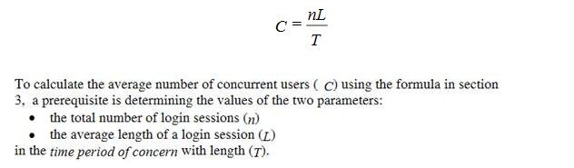
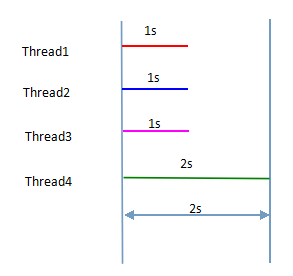
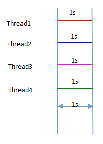
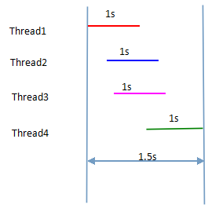

在操作系统中，并发是指一个时间段中有几个程序都处于已启动运行到运行完毕之间，且这几个程序都是在同一个处理机上运行，但任一个时刻点上只有一个程序在处理机上运行。
一、基础
TPS(Transactions Per Second)：每秒事务数
QPS(Query Per Second)：每秒请求数，QPS其实是衡量吞吐量的一个常用指标，就是说服务器在一秒的时间内处理了多少个请求。
方式一：二八定律
- 原理：每天80%的访问集中在20%的时间里，这20%时间叫做峰值时间
- 公式：( 总PV数 * 80% ) / ( 每天秒数 * 20% ) = 峰值时间每秒请求数(QPS)
- 峰值时间每秒QPS / 单台机器的QPS = 需要的机器
方式二：统计访问日志access.log
cat access.log| grep 'GET /'|cut -d ' ' -f4 |uniq -c |sort -n -r- 假设日志内容如下
1
2
3
4
5
6
7127.0.0.1 - - [08/May/2017:10:03:30 +0800] "GET /server.php HTTP/1.1" 200 1835 "http://localhost" "Mozilla/5.0 (Macintosh; Intel Mac OS X 10_15_7) AppleWebKit/537.36 (KHTML, like Gecko) Chrome/90.0.4430.93 Safari/537.36" "-"
127.0.0.1 - - [08/May/2017:10:03:30 +0800] "GET /index.php HTTP/1.1" 200 1835 "http://localhost" "Mozilla/5.0 (Macintosh; Intel Mac OS X 10_15_7) AppleWebKit/537.36 (KHTML, like Gecko) Chrome/90.0.4430.93 Safari/537.36" "-"
127.0.0.1 - - [08/May/2017:10:05:30 +0800] "GET /run.php HTTP/1.1" 200 1835 "http://localhost" "Mozilla/5.0 (Macintosh; Intel Mac OS X 10_15_7) AppleWebKit/537.36 (KHTML, like Gecko) Chrome/90.0.4430.93 Safari/537.36" "-"
127.0.0.1 - - [08/May/2017:10:07:30 +0800] "GET /server.php HTTP/1.1" 200 1835 "http://localhost" "Mozilla/5.0 (Macintosh; Intel Mac OS X 10_15_7) AppleWebKit/537.36 (KHTML, like Gecko) Chrome/90.0.4430.93 Safari/537.36" "-"
127.0.0.1 - - [08/May/2017:11:07:30 +0800] "GET /main.php HTTP/1.1" 200 1835 "http://localhost" "Mozilla/5.0 (Macintosh; Intel Mac OS X 10_15_7) AppleWebKit/537.36 (KHTML, like Gecko) Chrome/90.0.4430.93 Safari/537.36" "-"
127.0.0.1 - - [07/May/2017:11:09:31 +0800] "GET /public/index.php HTTP/1.1" 200 2298784 "-" "Mozilla/5.0 (Macintosh; Intel Mac OS X 10_15_7) AppleWebKit/537.36 (KHTML, like Gecko) Chrome/90.0.4430.93 Safari/537.36" "-"
127.0.0.1 - - [07/May/2017:11:09:31 +0800] "GET /public/index.php HTTP/1.1" 200 2298784 "-" "Mozilla/5.0 (Macintosh; Intel Mac OS X 10_15_7) AppleWebKit/537.36 (KHTML, like Gecko) Chrome/90.0.4430.93 Safari/537.36" "-"方式三：产品和运营统计，通过日活、在线、总用户等估算
- 根据订单量回放再乘以放大系数，放大系数自己吃不准就想办法找竞品要
方式四：完全凭个人经验，常用且已知的经验型数据如日志QPS在6-10w，RPC的QPS在10W，Redis的QPS是8-10w，MySQL大致6k-1W。
方式五：根据点击流测算，点击流配合转化率算出来也是准的
并发数(Concurrency)：指系统同时能处理的请求数量，这个也是反应了系统的负载能力。

- C：并发数
- n：压测时间段内所有的请求数
- L：平均响应时间
- T：压测总时长
吐吞量(Throughput)：指系统在单位时间内处理请求的数量。
- 公式1： 吞吐量 = 并发数 / 平均响应时间
- 公式2： 吞吐量 = 请求总数 / 总时长
1
2
3
4
5
6>从`C = nL / T`推导：
并发 = 请求总数 * 平均响应时间 / 总时长
⏬
并发 / 平均响应时间 = 请求总数 / 总时长
⏬
公式1 = 公式2响应时间RT(Response Time)：响应时间是指系统对请求作出响应的时间，一般取平均响应时间
- QPS(TPS) = 并发数 / 平均响应时间
- 并发数 = QPS * 平均响应时间
PV(Page View)：页面访问量，即页面浏览量或点击量，用户每次刷新即被计算一次
UV(Unique Visitor)：独立访客，统计1天内访问某站点的用户数(以cookie为依据)
DAU(Daily Active User)日活跃用户数量，常用于反映网站、互联网应用或网络游戏的运营情况。
- DAU通常统计一日（统计日）之内，登录或使用了某个产品的用户数（去除重复登录的用户），这与流量统计工具里的访客（UV）概念相似。
MAU(monthly active users)月活跃用户人数，是一个用户数量统计名词，指网站、app等月活跃用户数量（去除重复用户数）。
- 数量的大小反映用户的活跃度，但是无法反映用户的粘性。
二、计算
- 第一组模型：一共有4个线程，同时发了4笔请求，其中3笔耗时1s，一笔耗时2s，整个过程一共耗时2s。

1 | 公式1： |
- 第二组模型：一共有4个线程，同时发了4笔请求，4笔请求耗时均为1s，1s内全部发送完毕。

1 | 公式1： |
- 第三组模型：一共有4个线程，4笔请求耗时均为1s，但线程发送出现不同步现象，一共持续1.5s完成全部：

1 | 公式1： |
nginx访问量统计
- 根据访问IP统计UV
awk '{print $1}' access.log|sort | uniq -c |wc -l - 统计访问URL统计PV
awk '{print $7}' access.log|wc -l - 查询访问最频繁的URL
awk '{print $7}' access.log|sort | uniq -c |sort -n -k 1 -r|more - 查询访问最频繁的IP
awk '{print $1}' access.log|sort | uniq -c |sort -n -k 1 -r|more - 根据时间段统计查看日志
cat access.log| sed -n '/14\/Mar\/2015:21/,/14\/Mar\/2015:22/p'|more
- 根据访问IP统计UV
二八定律应用
1 | 每天300w PV的在单台机器上，这台机器需要多少QPS？ |